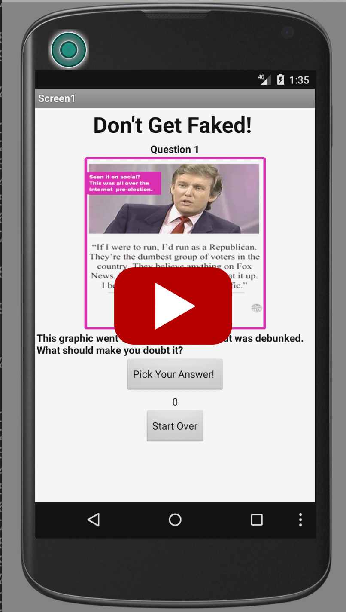
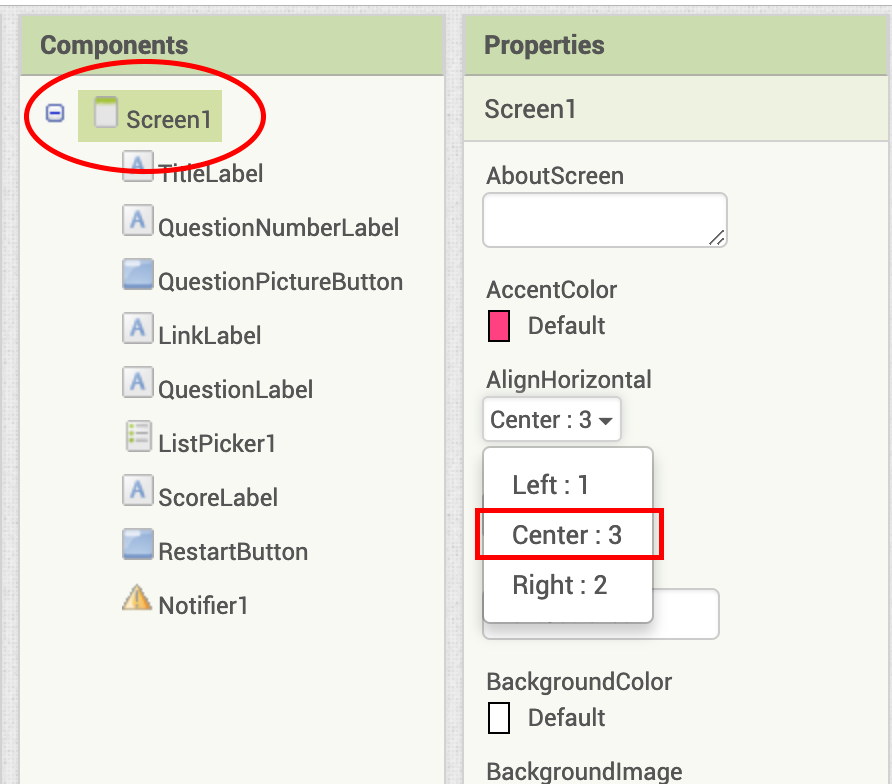
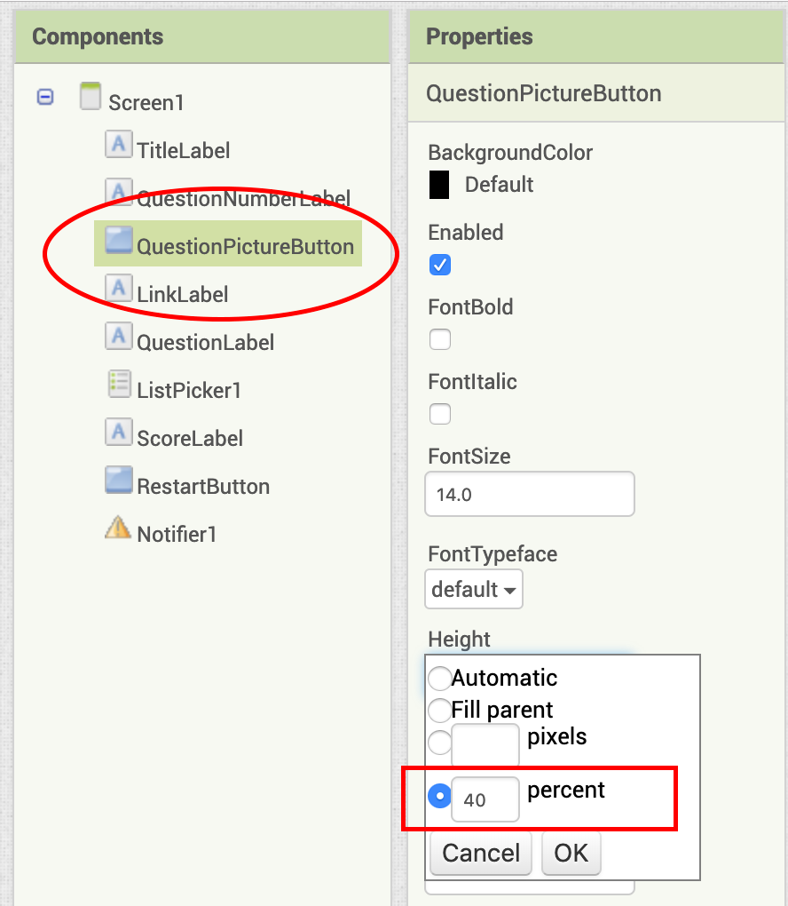
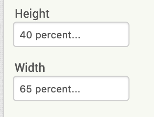
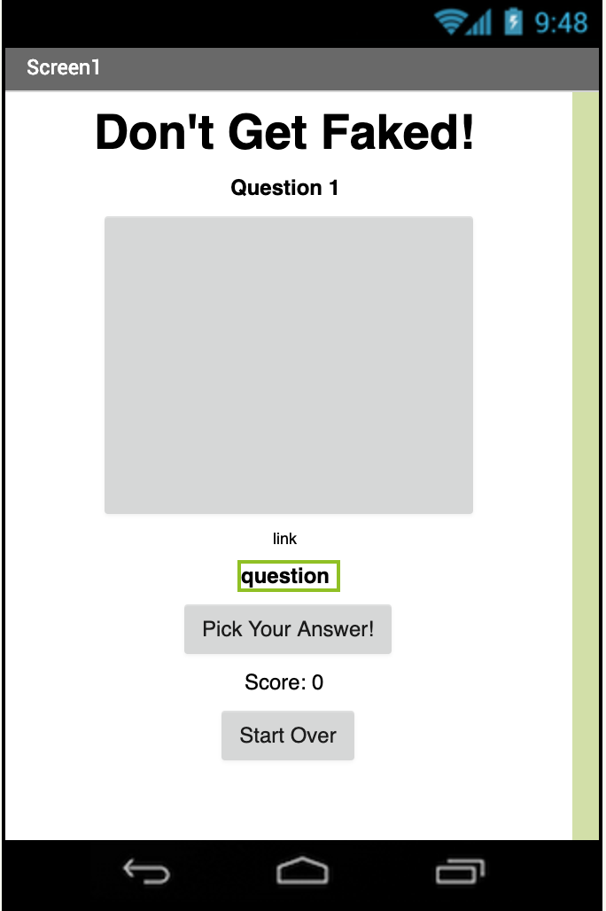
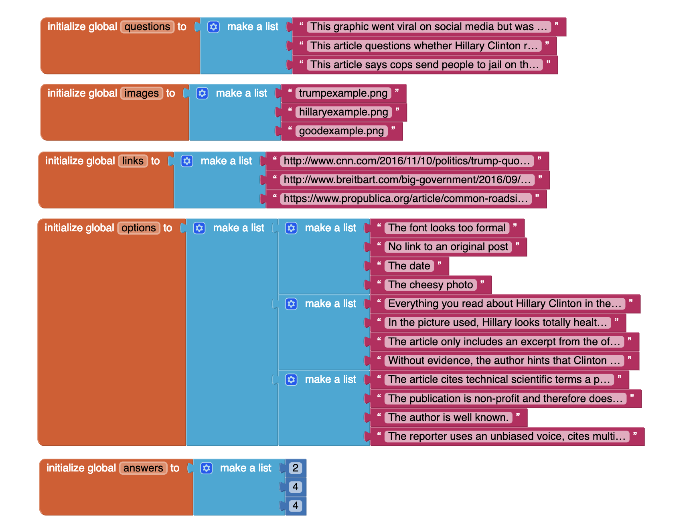
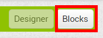
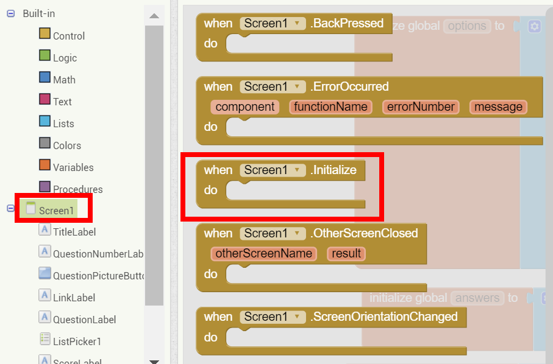
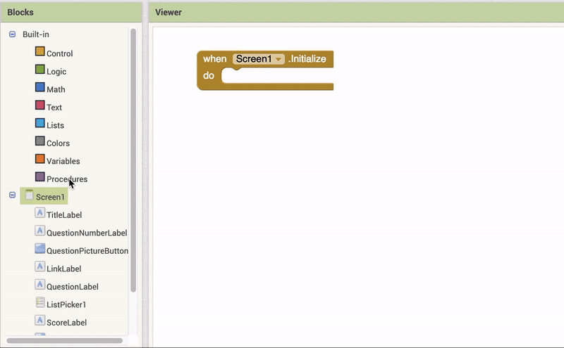

Connect your App
Fake News Quiz Tutorial
Introduction
In the past few years, "Fake News" has become an increasingly rampant problem. This whole fake news situation is out of hand, and no one wants to be the next clown spreading nonsense about something that never happened!To test your Fake News sleuthing skills, YR Media published a quiz.
Now it's your turn to create and test a BS detector. Can you detect Fake News?

In this tutorial, you're going to build a Fake News quiz to see if users can can figure out if a story if fake or real, and why.
There are three questions about news stories - some fake, some real. The user has to choose their answer from a list. Watch the video below to see how it works.
User Interface
Add the following components in the Designer, and rename them as follows:
- Label -> TitleLabel
- Label -> QuestionNumberLabel
- Button -> QuestionPictureButton
- Label -> LinkLabel
- Label -> QuestionLabel
- ListPicker -> ListPicker1
- Label -> ScoreLabel
- Button -> RestartButton
- Notifier -> Notifier1
Now click on Screen1 in the Components list and set its AlignHorizontal property to "Center: 3".
For QuestionPictureButton, change its Height to 40 percent.  Change its Width to 65 percent.
Change Text Properties
Change the Text property for each component so your interface looks like the image below. Note you might have to change FontSize for some.
Hide the LinkLabel
Uncheck the Visible property for LinkLabel so it is hidden from the user.

Lists
We have provided you with some lists for the quiz. The questions, the images, links (to the story), the options for possible answers, and the number that points to the correct answer. Take a look at the image and get a feel for what the different lists mean.
For example, the first question talks about a graphic of Donald Trump that went viral during the 2016 presidential campaign.
The matching image is named "trumpexample.png".
The link is to a story on cnn.com.
There are four options for possible answers in the options list. Note that each list of options is a list within a list.
And the correct position of the correct answer in the options list is 2, the second item in the first list - the text "No link to an original post".
Initialize Variables
Click on the Blocks button upper right corner of your screen to open the Blocks Editor.
You should see the lists we described on the previous page.
Click on the Variables drawer on the left and drag two initialize global name blocks into the workspace.
Rename the new global variables to "index" and "score". Initialize "index" to 1, from the Math drawer, and "score" to 0.
index will keep track of what question number you're on. In this version of the quiz, you have three questions in total.
score will keep track of how many answers the user has gotten right.
Create SetQuestion procedure.
Procedures allow you to cut down repetitive code. For this app, you're going to make a procedure that handles changing to the next question so you don't have to write the same code over and over again.
Click on the Procedures drawer on the left and drag out a to procedure block.
Rename this new procedure to "SetQuestion".
Display question number
First thing you want to do for a new question is to display "Question 1", "Question 2", etc. You will do this using QuestionNumberLabel. The variable index is also the question number, so you can use that too.
Set the image for the question
Each question has a picture to go with it, set in the images list. You want to set the image for QuestionPictureButton to the associated image for the question. You'll do that by selecting the correct image from the images list using the index.
Set QuestionLabel, LinkLabel, and ListPicker
Now that you've set two of the pieces of information for a question, you should be able to do three more: set LinkLabel.Text, set QuestionLabel.Text, and set ListPicker1.Elements.
For all of them, you need to use select list item with the appropriate list (links, questions, and options).
First, set LinkLabel.Text based on the links list.
Next, set QuestionLabel.Text based on the questions list.
Then, set ListPicker1.Elements, based on the options list.
Note that "Elements" is a list--so options is actually a list of lists. The ListPicker will display the options the user can choose to answer.
Set the first question
When the app opens, the first question should automatically load. You can do this with the SetQuestion procedure. Because you initialized the index variable to 1, SetQuestion will display the first question.
Drag out a when Screen1.Initialize block from the Screen1 drawer.
Drag out a SetQuestion block from the Procedures drawer, and snap it into the event block.
This block "calls" the procedure, so the code within the procedure executes here.
Display the article link
As this is a quiz about news, your quiz has to include sources too. The link will display when the image button is clicked, and become invisible when the button is clicked again.
In other words, when the link is visible, set it to invisible, and vice versa.
Check for a correct answer
Users select an answer by picking from options in the ListPicker. After they pick an answer, an event is triggered: when ListPicker1.AfterPicking.
In this event block, test that the user's selection matches the correct answer.
Handle a correct answer
When you get a correct answer, three things should happen:
1) the score increases,
2) the Notifier shows an alert,
3) the app advances to the next question.
Increase the score:
Notify the user
Use the Notifier to send the user an alert.
Advance to the next question
You need to increment the index variable, which keeps track of the question number, because you want to move onto the next question. You also want to call the SetQuestion procedure to display the next question.
One thing to remember is that you only have three questions, so you don't want to increment index and get the next question if your current question is number 3. So, you want to add an if block to test for index < 3 before incrementing.
Handle a wrong answer
Much of the code for a wrong answer is the same as that for a correct answer. You need to decrement the score and show an alert to try again.
Code the Restart button
The final event to code is when the Restart button is clicked.
When the button is clicked:1) the score and the ScoreLabel are reset to 0,
2) the index is set back to 1,
3) SetQuestion is called to display the first question.

Test it out!
Try running the app on your device. Tap on the picture button and the Start Over button. Do they work? What about the ListPicker? Does your app detect right or wrong answers?